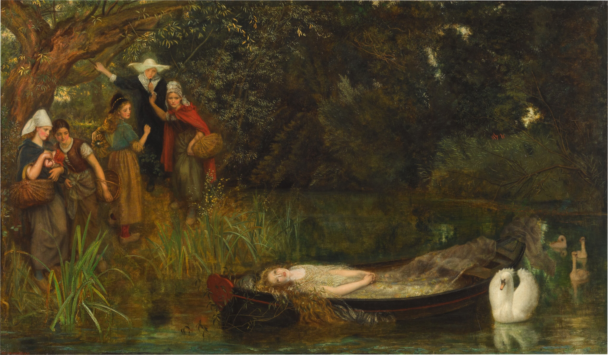
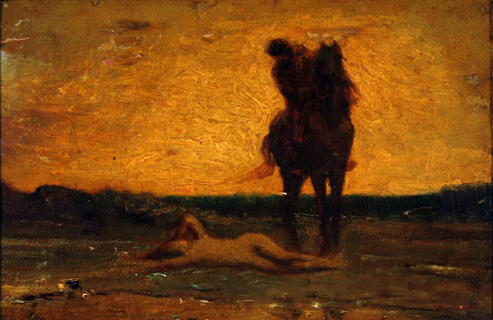

Once I was still a curious maiden, joyfully dwelling amongst the woods with my two brothers, on the boatman’s boat, they took me with the flood up the great river to the cape. Only they would not pass. Ordained with the precious gift of youth, gods gift to me as compensation for my rather blank and simple features. A blissful innocence and naivety casted over my eyes. I gazed beyond it and far past the glimmering floods at all the riches and beauty and possibility that lie. I imagined all that could have been out there, the palace, the King, the world. Still hopeful, I was not yet aware of what was to come.
Before he came, I could not fathom that a man take notice to me. That I could catch his wandering eye, make him pause for the slightest second, and feel even a fleeting desire for me. That afternoon, the great knight Sir Lancelot arrived in search of a shield unlike his own so he could fight at the joust unidentified and in secrecy. He was on a quest for the diamond murmured about across all the land, rewarded to the victor of the battle. My brothers teased me, as they so often did, speaking that I dreamt of someone placing this diamond in my hand, and too slippery to be held it fell into a stream. ‘A fair large diamond’ they said, ‘such be for Queens and not for simple maids.’. My eyes stayed focused upon the ground as I heard my name so tossed around. In that raspy and noble voice, he said, ‘This maid might wear as fair a jewel as on earth.’. I lifted my eyes and for the first time I saw him in that lustful way and felt a passion, the passion that would show me a glimpse into the future, and to my eventual demise.
In his face I could see its marks with time. More than twice my years I could see his guilty love for the queen, his battle in the love be bore with the lord. The scar on his cheek, his skin tanned and tired, it told stories of the world and his tendency to waste in solitude. It revealed the agony he carried in himself. He seemed the best of men. In his face I saw love. He stood turned to his horse humming, and from his lips came a melancholic sound that was contagious. I asked him to wear my favor in the tournament. A red sleeve embroidered with pearls. At first, he denied, stating that not one woman in all the many I’m sure he’s encountered, has he worn their favor. It was his limit. Those who know him know such is his wont, he told me. Then wearing mine would be of even more of an unlikelihood, I admitted. Perhaps he was intrigued by my acceptance of my mediocracy, but he said he would wear it. With that aged smile, he asked me to hold his shield for safekeeping until his return, and so I did. There I kept it, and began to live in fantasy.
The days passed and my infatuation grew. Frolicking in the fields, sensing the happiness in the trees. It felt as if all nature existed solely for me, for my love. In reflections in the water or in the clouds in the sky I saw his face, in the silence I heard him speak, and it kept me from my sleep. In my mind I painted a picture, and so my imagination painted what I saw and dreamt, and it became real. That was until the day Gawain came with the diamond and told me the news. That he had won the joust, and he had come to find his shield and reveal the masked knight’s identity. That he had worn the favor provoking rumors of him with a maiden, most believing her to be unworthy. That he was wounded somewhere, and that his heart belonged to another, and I stood no chance. But my heart could not bear to not see him another day, and my gentle maidenly desire to care for his precious soul overtook me, so I asked father if I could find him and give him the diamond. Fathers last words to me replayed in my head, ‘being so very willful you must go’ until it became ‘being so very willful you must die’.
So, I went off and I found him as a gauntly and deathly pale skeleton of himself. I knelt down and placed the diamond in his open palm, and felt a kiss on my face. I fell to the ground. He told me after my travels I should rest, but there was no need. I was at rest. He would call me friend and sister, sweet Elaine, and hold me tenderly. But I knew in his arms that he held me with all love accept the love. He was faithful to his unfaithful kind of love. His heart bore much more experience and wisdom than mine.
By the time he was recovered we rode back to Astolat. Every morning, I arranged myself in the ways I found prettiest. Obsessive I became, posing like a painted lady of perfection, so maybe then he would want me. He would ask me every day of my wishes of a gift that he could give me as a thank you for my care. He said he wanted me not to hold back, he wanted to know what was most true to my heart’s desire. But I lost the power to speak. On his last day he found me in the gardens and asked once more, and I cried “I have gone mad. I love you, let me die.’ I told him my greatest wish was his love- to be his wife. He said that if he wished to wed, he would have married already. Then I told him my wish was not to be his wife, but to be with him throughout the world, to continue to see his face. He replied in dismissal of the world, that it was not a cheerful place. Alas, I spoke, my good days are done. Yet he tried to assure me that this was not love, but a youthful first flash, a fleeting lust, and that one-day life’s flower would bloom for me, and I would find a man more suitable. Not one thrice my age. This future he was promising, the same words came from my father, but it did not ease me. And so, I went up to my tower as he set off to leave, and I stared at him. At him and his horse, his helmet which no longer carried my sash on it. And with love’s intuition, I knew he knew I was looking. But he did not look back.
Perhaps maybe I was wrong for resolving my fate to eternal rest, maybe things would have turned out differently if I gave myself the chance, but dear reader if only I could make you understand. All my life’s lonely days in the tower longing, waiting innocently, to be loved. Teased and insignificant I had been raised to feel. Lancelot, he was the first to ever breathe warmth into my cold and lonesome existence. The first to speak a word of kindness to me. That feeling could never happen again. Maybe another man of chivalry would come along, but it would not be the same. There is no love as pure as the first. Especially when they were the first to ease your sorrows and fill the emptiness in the sky and beneath the ground. Lancelot took from me my ignorance, and so he took with it my bliss. Nativity was the only quality I had that kept a shimmer in my eyes. No rays of sunlight would shine on me when I passed through the fields, no breeze would carry my hair in the wind any longer. My choice was preserving myself in time a beautiful martyr. A mystical fairy, fallen sullenly from the hands of unrequited love.
They would lay me down, dressed to the finest. In my palms would sit my transcribed note, where I shall guard it even in death. In the bed I died for Lancelot’s love, they would place in a boat decked like the Queens, and send me with the flood up the great river to Camelot, where I would arrive at the Palace doors.

“Most noble lord, Sir Lancelot of the Lake,
I sometime call’d the maid of Astolat,
Come, for you left me taking no farewell,
Hither, to take my last farewell of you.
I loved you, and my love had no return,
And therefore my true love has been my death.
And therefore to our Lady Guinevere,
And to all other ladies, I make moan:
Pray for my soul, and yield me burial.
Pray for my soul thou too, Sir Lancelot,
As thou art a knight peerless.” (1265, Tennyson).
